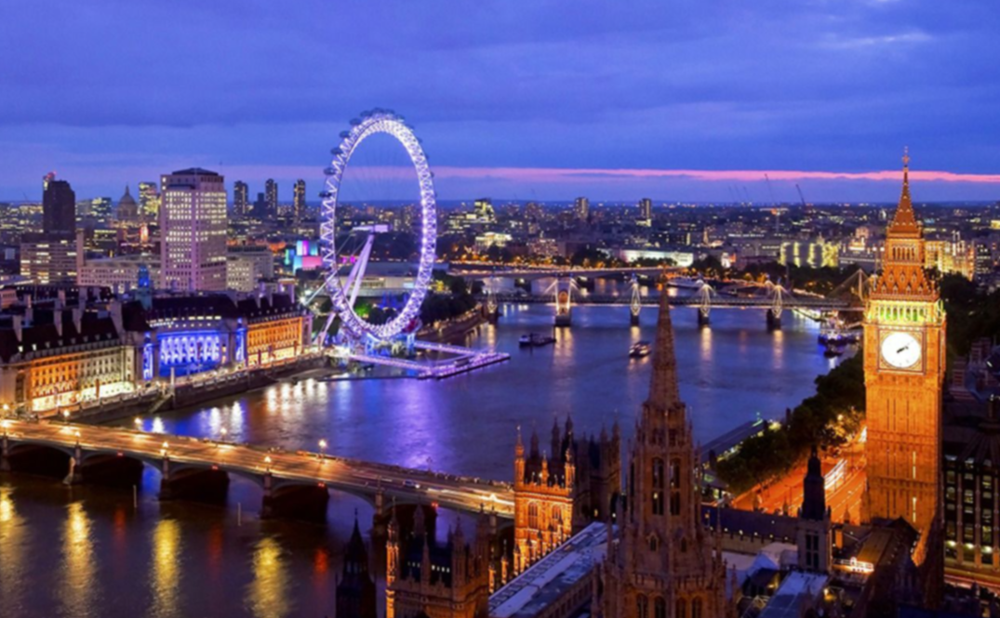
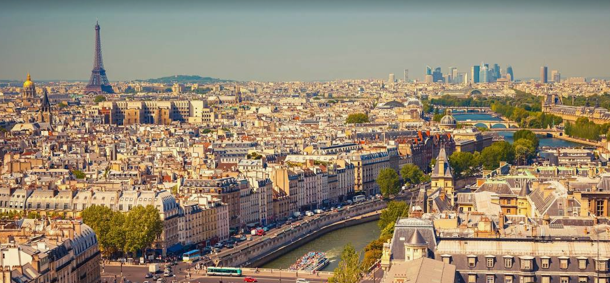
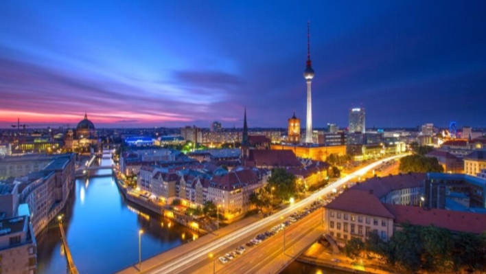

Ми пропонуємо найкращі авіаперельоти з України до популярних міст Європи та світу.
|  |  |  |
|---|---|---|
| Лондон | Париж | Берлін |
| Столиця Великої Британії, відома Біг-Беном, Тауером і Темзою. | Місто кохання, де знаходиться Ейфелева вежа, Лувр і Монмартр. | Культурне серце Німеччини з Бранденбурзькими воротами і Рейхстагом. |
| Маршрут | Час у дорозі | Частота рейсів |
|---|---|---|
| Київ - Лондон | 3 години 30 хвилин | Щодня |
| Львів - Париж | 2 години 50 хвилин | 5 разів на тиждень |
| Одеса - Берлін | 2 години 40 хвилин | 4 рази на тиждень |
| Харків - Стамбул | 2 години 20 хвилин | Щодня |
| Дніпро - Відень | 2 години 45 хвилин | 3 рази на тиждень |